Benjamin Franklin

“Early to bed and early to rise, makes a man healthy, wealthy and wise.”
Benjamin Franklin, 1735
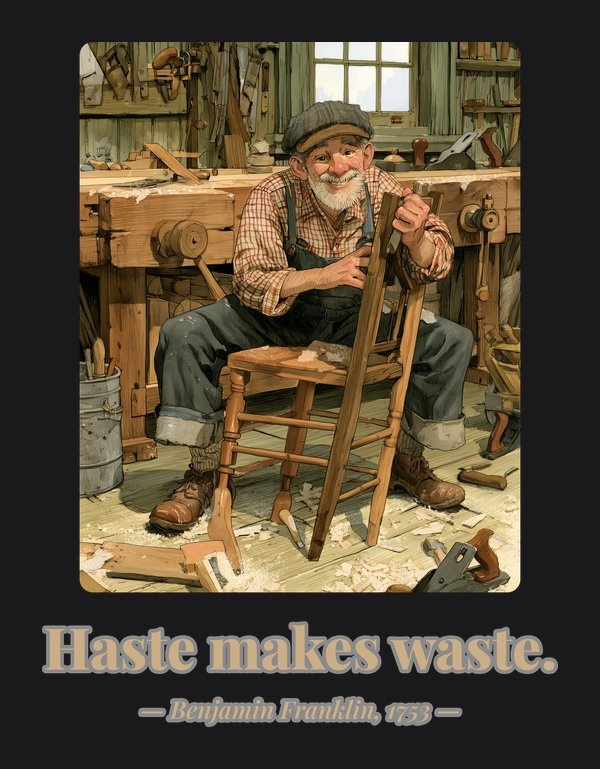


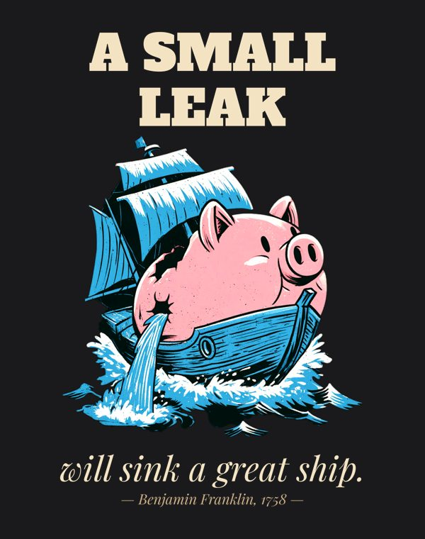
“In this world nothing can be said to be certain, except death and taxes.”
Benjamin Franklin, 1789
George Washington
Thomas Jefferson
“I like the dreams of the future better than the history of the past.”
Thomas Jefferson, 1816
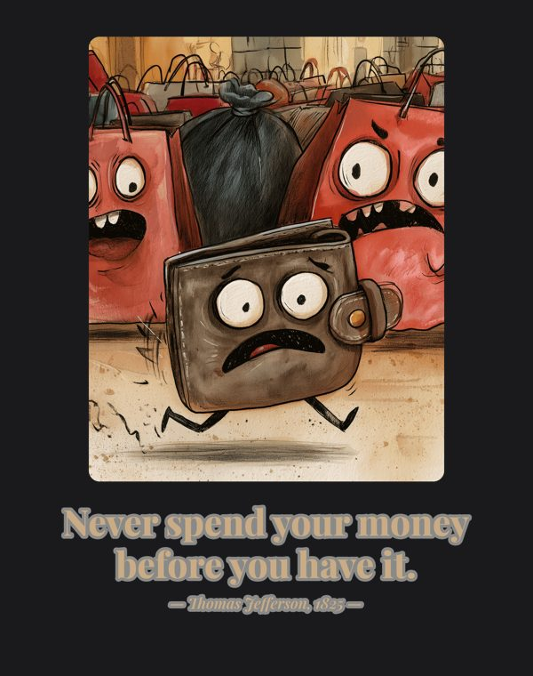


Founders and patriots


Presidents
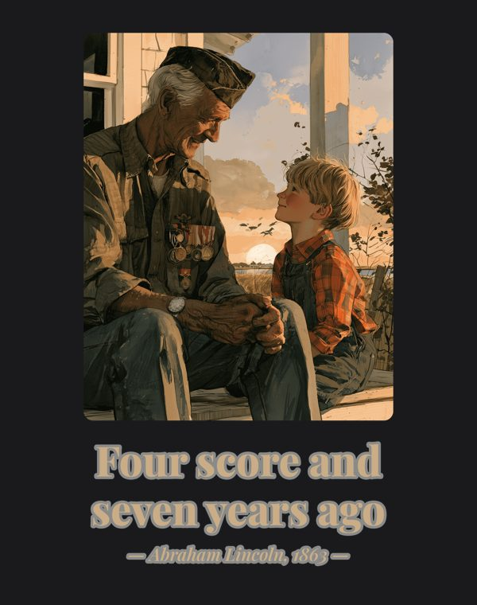
Writers and wits
“Never put off till tomorrow what may be done day after tomorrow just as well.”
Mark Twain, 1870
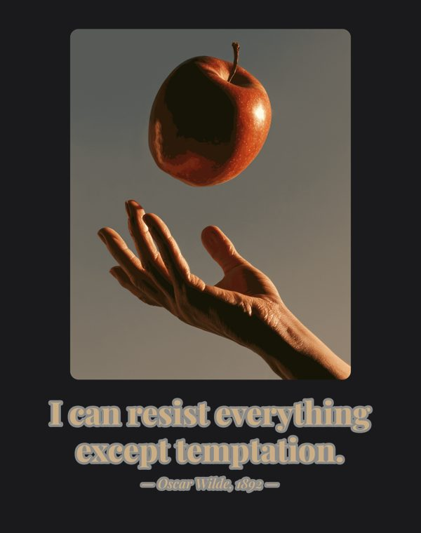
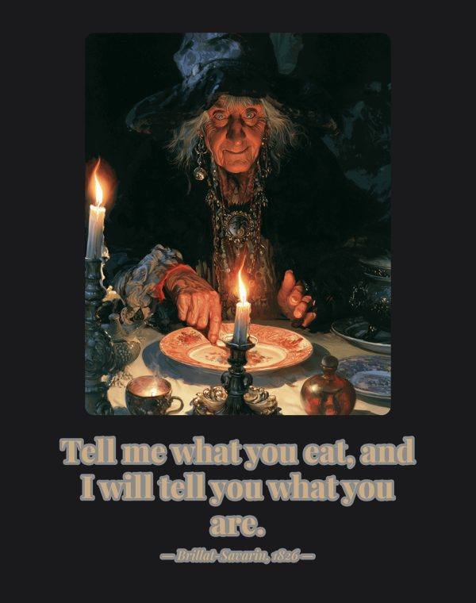
Laws of life and science
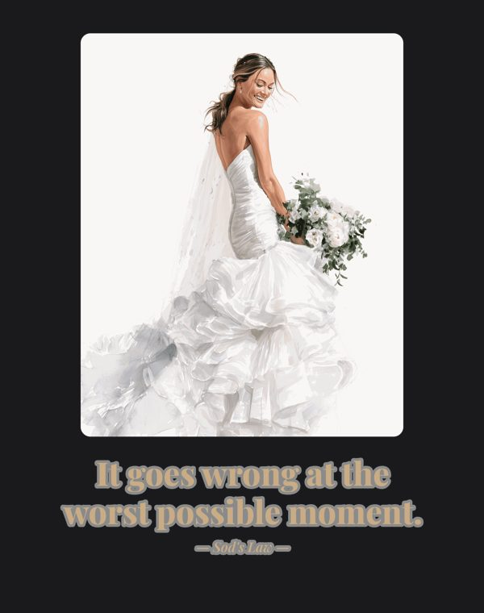
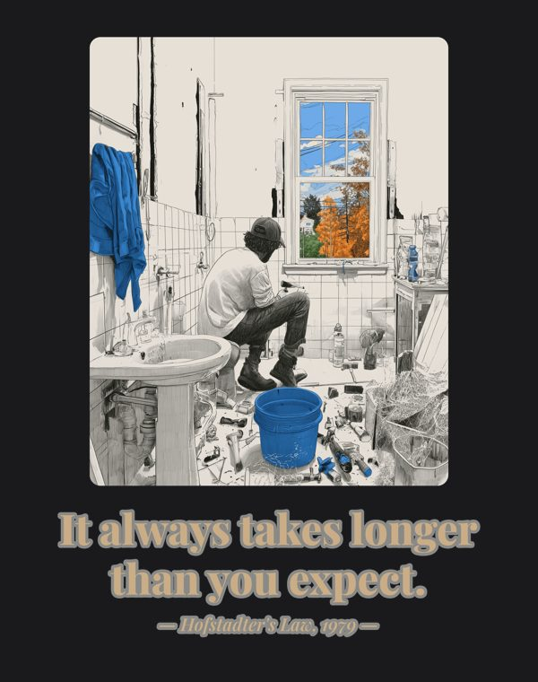
“The first 90% takes 90% of the time. The last 10% takes the other 90%.”
The ninety-ninety rule
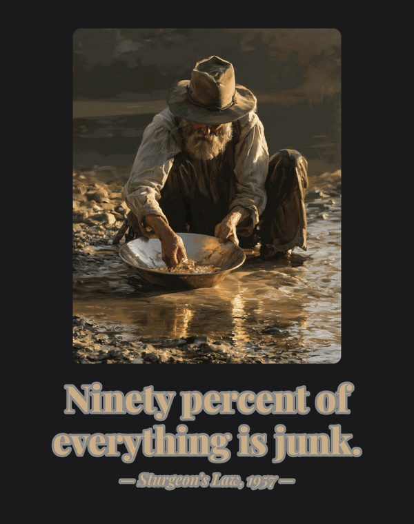
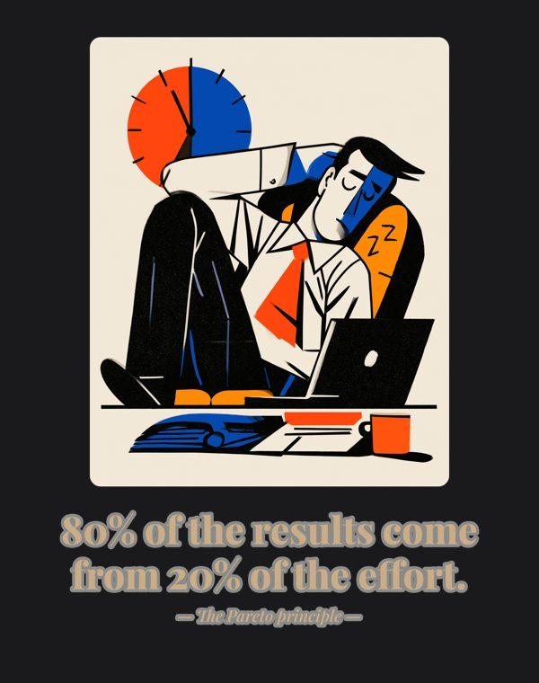
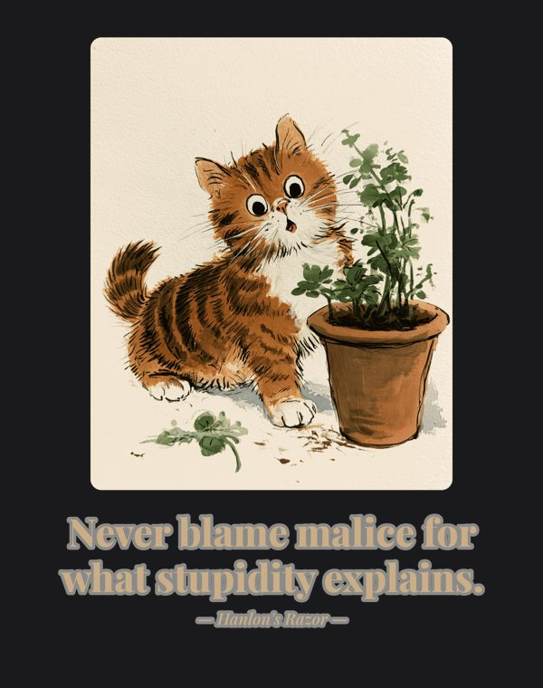
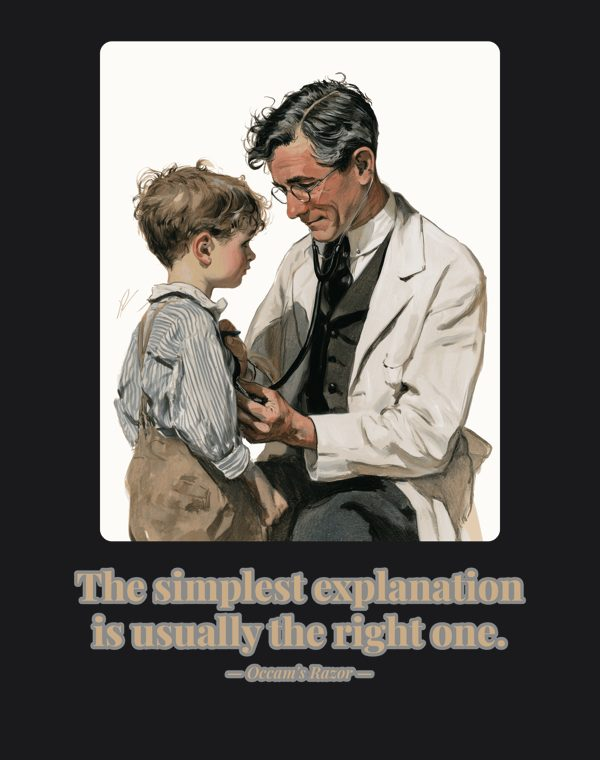
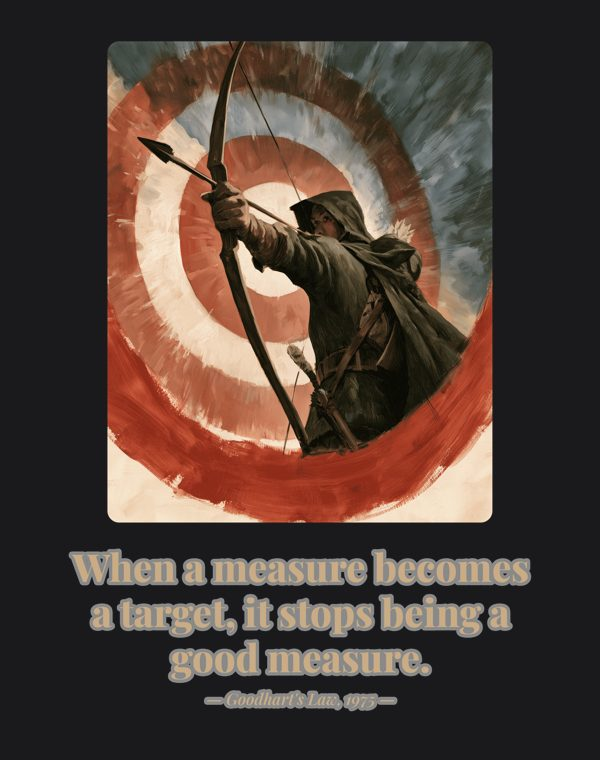
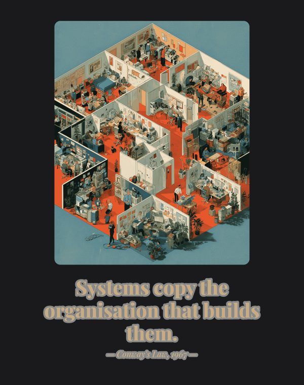
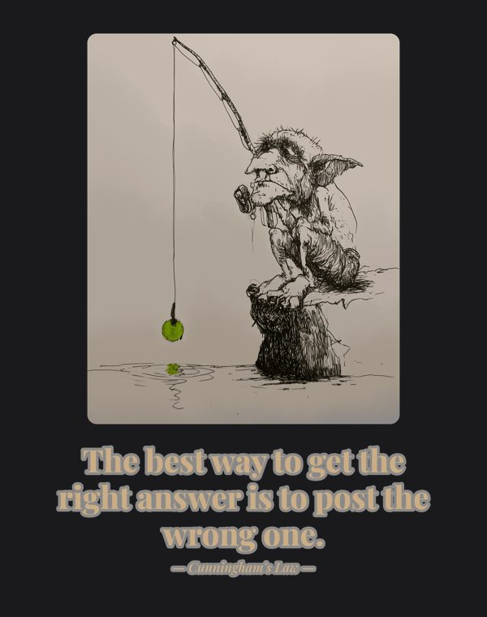
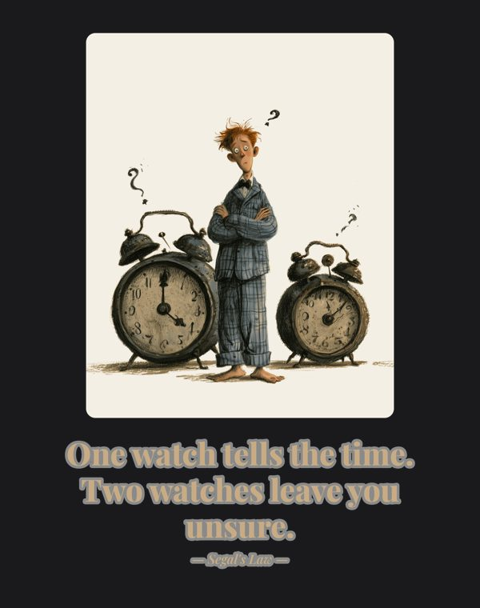
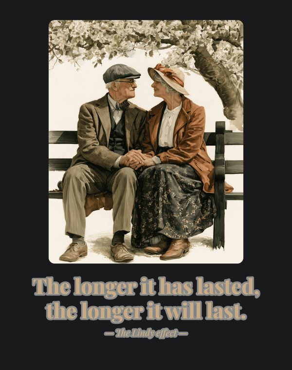
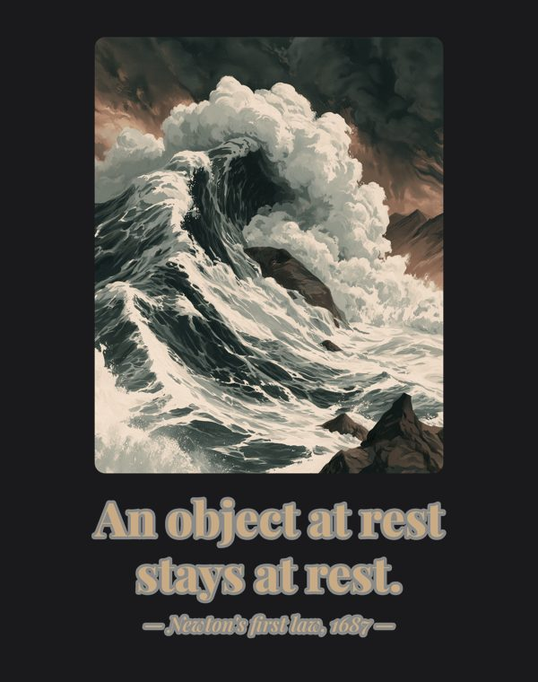
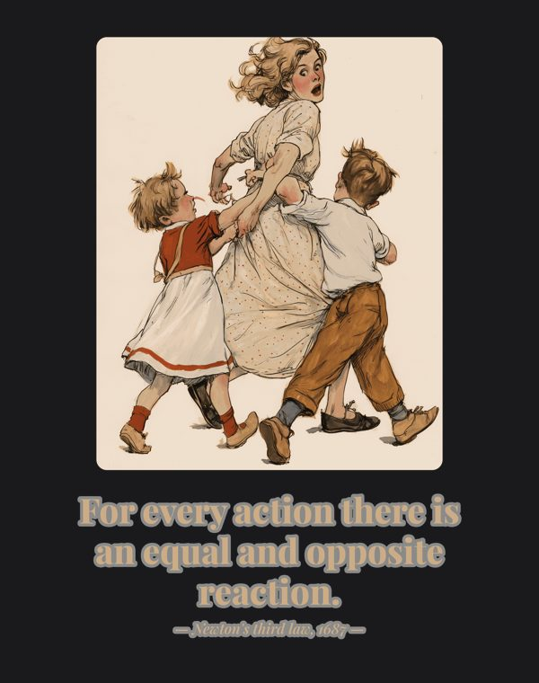
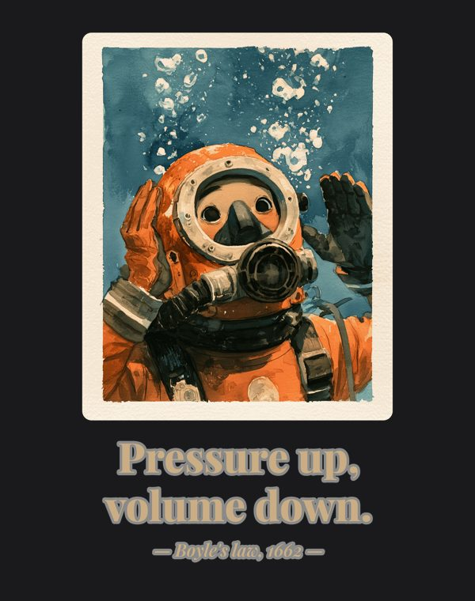